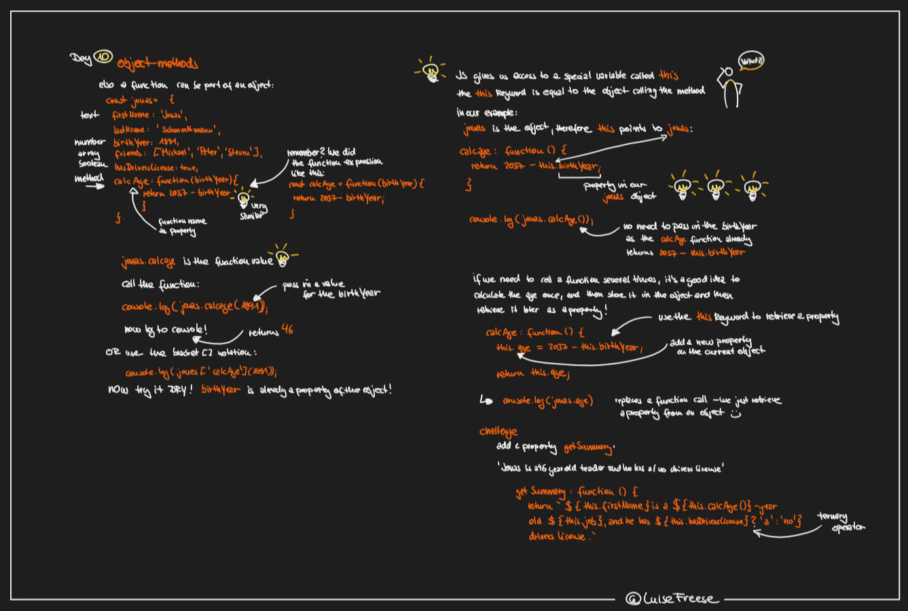
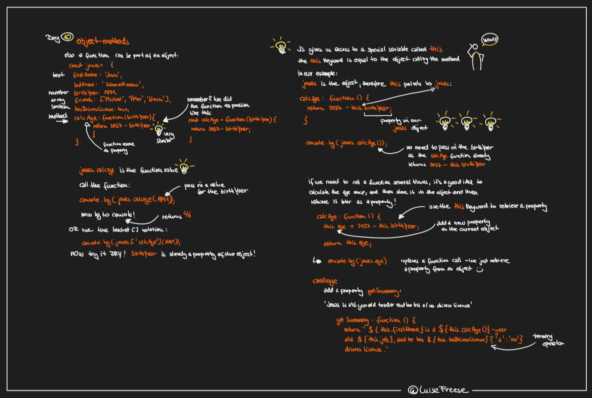
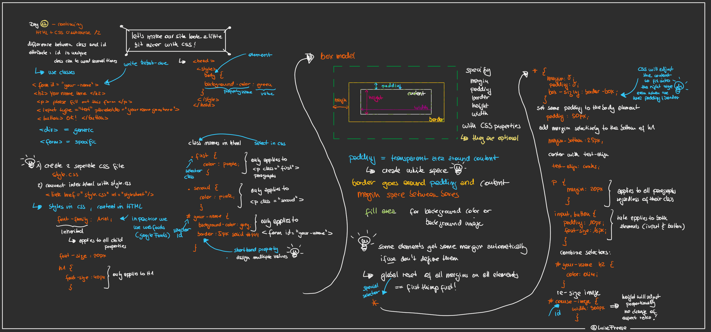
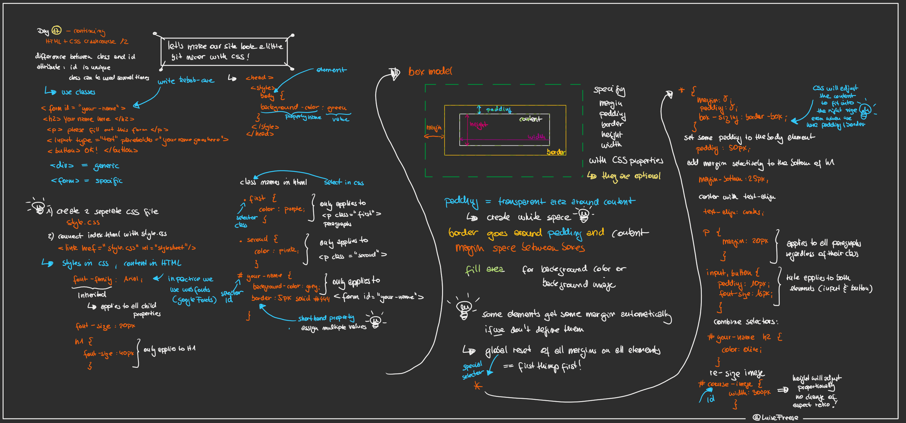

Intro to JavaScript Day 3: type conversion and type coercion
Day 3: type conversion and type coercion Day 4: operators, if statements, and the ternary operator
Day 5: a bit of history and introduction to functions
Day 4: operators, if statements, and the ternary operator
Day 5: a bit of history and introduction to functions Day 6: Functions calling other functions
Day 6: Functions calling other functions Day 8: Array methods
Day 8: Array methods Day 10: Objects methods
Day 14: Learn how to code: it's a journey!
Day 15: Learn how to code: debug skills!
Day 10: Objects methods
Day 14: Learn how to code: it's a journey!
Day 15: Learn how to code: debug skills! Day 16: CrashCourse HTML and CSS - joined by Miss 11
Day 17: CrashCourse HTML and CSS - joined by Miss 11 - Part 2
Day 18: first project - make a "guess my number" game - Part 1
Day 19: first project - make a "guess my number" game - Part 2
Day 20: first project - make a "guess my number" game - Part 3
Day 21: second project - modal window üßÅ
Day 22: second project - modal window üßÅ - part 2
Day 23: third project - roll the dice üé≤üé≤üé≤
Day 24: JavaScript behind the scenes - overview ✨
Day 25: JavaScript engine and JavaScript runtime in the browser üíª
Day 26: Execution context and the call stack üíª
Day 16: CrashCourse HTML and CSS - joined by Miss 11
Day 17: CrashCourse HTML and CSS - joined by Miss 11 - Part 2
Day 18: first project - make a "guess my number" game - Part 1
Day 19: first project - make a "guess my number" game - Part 2
Day 20: first project - make a "guess my number" game - Part 3
Day 21: second project - modal window üßÅ
Day 22: second project - modal window üßÅ - part 2
Day 23: third project - roll the dice üé≤üé≤üé≤
Day 24: JavaScript behind the scenes - overview ✨
Day 25: JavaScript engine and JavaScript runtime in the browser üíª
Day 26: Execution context and the call stack üíª